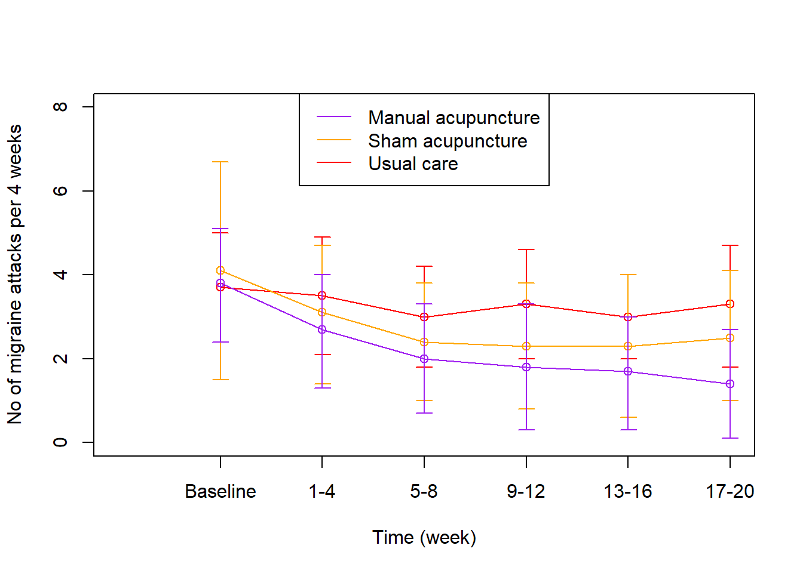
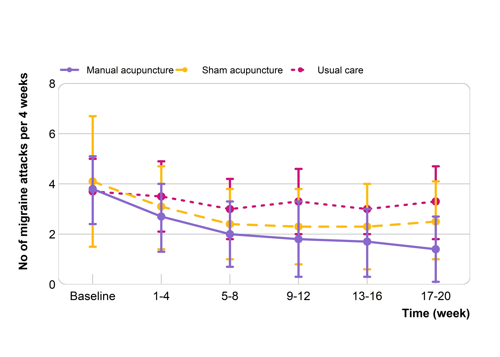
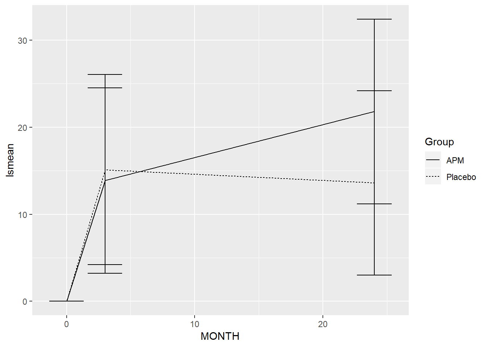
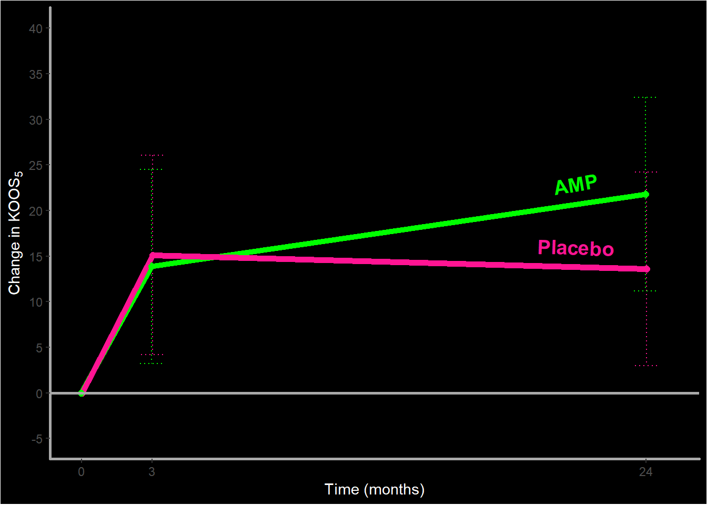
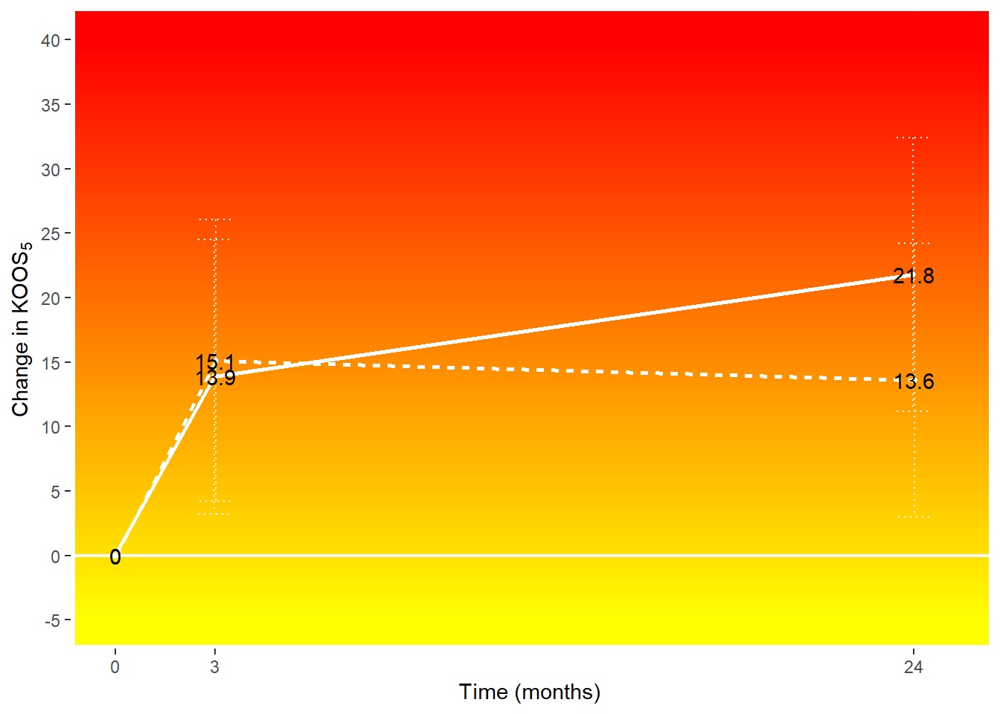

R Graphs
by S. M. Nielsen
Line chart with confidence intervals - published in BMJ (BMJ style)
Let’s try to reproduce the lower part in this figure published in BMJ by Xu et al. (2020), where the efficacy of manual acupuncture as prophylactic treatment for patients with episodic migraine was assessed. The graph shows the number of migraine days per 4 weeks (top), and the frequency of migraine attacks per 4 weeks (bottom) during the study period. Further details can be found in the article.
Read in the data
To make it simple, all data needed for the figure is typed into R in this format.
## TIME EST_manual EST_sham EST_usual UL_manual UL_sham UL_usual LL_manual
## 1 1 3.8 4.1 3.7 5.1 6.7 5.0 2.4
## 2 2 2.7 3.1 3.5 4.0 4.7 4.9 1.3
## 3 3 2.0 2.4 3.0 3.3 3.8 4.2 0.7
## 4 4 1.8 2.3 3.3 3.3 3.8 4.6 0.3
## 5 5 1.7 2.3 3.0 3.0 4.0 4.0 0.3
## 6 6 1.4 2.5 3.3 2.7 4.1 4.7 0.1
## LL_sham LL_usual
## 1 1.5 2.4
## 2 1.4 2.1
## 3 1.0 1.8
## 4 0.8 2.0
## 5 0.6 2.0
## 6 1.0 1.8Click on ‘CODE’ to see how the data is typed into R - use the same principle for your own data. (Please note, as I was not involved in this project, the values are simply just read from the published figure)
TIMElabel <- c("Baseline","1-4","5-8","9-12","13-16","17-20")
TIME <- c(1:6)
EST_manual <- c(3.8,2.7,2,1.8,1.7,1.4)
EST_sham <- c(4.1,3.1,2.4,2.3,2.3,2.5)
EST_usual <- c(3.7,3.5,3,3.3,3.0,3.3)
UL_manual <- c(5.1,4.0,3.3,3.3,3.0,2.7)
LL_manual <- c(2.4,1.3,0.7,0.3,0.3,0.1)
UL_sham <- c(6.7,4.7,3.8,3.8,4.0,4.1)
LL_sham <- c(1.5,1.4,1.0,0.8,0.6,1.0)
UL_usual <- c(5.0,4.9,4.2,4.6,4.0,4.7)
LL_usual <- c(2.4,2.1,1.8,2.0,2.0,1.8)
DATA <- as.data.frame(cbind(TIME, EST_manual,EST_sham,EST_usual,
UL_manual,UL_sham,UL_usual,
LL_manual,LL_sham,LL_usual))
DATA
The Basic
This is the most simple plot you can make. This is the essential part of the code for making the plot.

Show the code by clicking on ‘CODE’.
require(plotrix) #If the plotrix package is not installed, run this: install.packages("plotrix")
#Plot
plot(DATA$TIME, DATA$EST_manual,
ylim=c(0,8), xlim=c(0,6), xaxt='n',
ylab="No of migraine attacks per 4 weeks", xlab="Time (week)")
#X axis
axis(1, c(1:6), labels=TIMElabel)
#Lines and CIs
lines(DATA$TIME, DATA$EST_usual, col="red")
plotCI(DATA$TIME, DATA$EST_usual, ui=UL_usual, li=LL_usual, add=TRUE, col="red")
lines(DATA$TIME, DATA$EST_sham, col="orange")
plotCI(DATA$TIME, DATA$EST_sham, ui=UL_sham, li=LL_sham, add=TRUE, col="orange")
lines(DATA$TIME, DATA$EST_manual, col="purple")
plotCI(DATA$TIME, DATA$EST_manual, ui=UL_manual, li=LL_manual, add=TRUE, col="purple")
legend("top", legend=c("Manual acupuncture", "Sham acupuncture", "Usual care"),
col=c("purple", "orange", "red"), lwd=1)
The Published
To replicate the published figure, some changes in the layout are needed.

To fit this figure to your own data, you may want to change the values saved for XMIN,XMAX, YMIN and YMAX, the position of the ticks on the x-axis which currently reads c(0,2,4,6,8), the position of the horizontal lines plotting area which reads h=c(2,4,6), and the position of the legend which currently reads 8.7 on the y axis.
library(plotrix) #If the plotrix package is not installed, run this: install.packages("plotrix")
library(berryFunctions) #If the berryFunctions package is not installed, run this: install.packages("berryFunctions")
#Axis min and max
YMAX <- 8; YMIN <- 0
XMAX <- 6.5; XMIN <- 0.5
#Plot
plot(DATA$TIME, DATA$EST_manual, type="o", pch=20,
ylim=c(YMIN,YMAX+1), xlim=c(XMIN,XMAX), yaxs="i", xaxs="i", axes=F,
ylab="", xlab="")
#Axes and labels
axis(2, c(0,2,4,6,8), col = NA, col.ticks = NA, las=2, line=-0.8)
axis(1, c(1:6), labels=TIMElabel, col = NA, col.ticks = "grey", tck=-0.04, line=-0.7)
mtext("No of migraine attacks per 4 weeks", 2, 2, font=2)
mtext("Time (week)", 1, 1.5, font=2, at=XMAX, adj=1)
#Plotting area
roundedRect(XMIN,YMIN,XMAX,YMAX, rounding=0.05, border="grey")
abline(h=c(2,4,6), col="grey")
#Lines and CIs
lines(DATA$TIME, DATA$EST_usual, type="o", pch=20, lwd=3, cex=1.7, lty=3, col="deeppink3")
plotCI(DATA$TIME, DATA$EST_usual, ui=UL_usual, li=LL_usual, add=TRUE, lwd=3, sfrac=0.006, col="deeppink3")
lines(DATA$TIME, DATA$EST_sham, type="o", pch=20, lwd=3, cex=1.7, lty=2, col="darkgoldenrod1")
plotCI(DATA$TIME, DATA$EST_sham, ui=UL_sham, li=LL_sham, add=TRUE, lwd=3, sfrac=0.006, col="darkgoldenrod1")
lines(DATA$TIME, DATA$EST_manual, type="o", pch=20, lwd=3, cex=1.7, col="mediumpurple3")
plotCI(DATA$TIME, DATA$EST_manual, ui=UL_manual, li=LL_manual, add=TRUE, lwd=3, sfrac=0.006, col="mediumpurple3")
legend(XMIN, 9, legend=c("Manual acupuncture", "Sham acupuncture", "Usual care"),
col=c("mediumpurple3", "darkgoldenrod1", "deeppink3"),
lty=c(1,2,3),
cex=0.8, lwd=3, pch=20,
box.lty=0, horiz=TRUE)
Line chart with confidence intervals - published in BMJ Open
Let’s try to reproduce panel A in this figure published in BMJ Open by Roos et al. (2018), where knee surgery (arthroscopic partial meniscectomy) was compare to sham surgery (skin incision only). The graph shows the mean change from baseline at 3 and 24 months in the primary outcome (KOOS5 score, a higher score is better). Further details can be found in the article.
Read in the data
To make it simple, all data needed for the figure is typed into R in this format.
## MONTH Group lsmean lower.CL upper.CL
## 1 0 APM 0.0 0.0 0.00
## 2 3 APM 13.9 3.2 24.50
## 3 24 APM 21.8 11.2 32.40
## 4 0 Placebo 0.0 0.0 0.00
## 5 3 Placebo 15.1 4.2 26.07
## 6 24 Placebo 13.6 3.0 24.20Click on ‘CODE’ to see how the data is typed into R - use the same principle for your own data.
MONTH <- c(0,3,24,0,3,24)
Group <- c("APM","APM","APM","Placebo","Placebo","Placebo")
lsmean <- c(0, 13.9, 21.8, 0, 15.1, 13.6)
lower.CL <- c(0, 3.2, 11.2, 0, 4.2, 3.0)
upper.CL <- c(0, 24.5, 32.4, 0, 26.07, 24.2)
DATA <- data.frame(MONTH, Group, lsmean, lower.CL, upper.CL)
DATA
The Basic
This is the most simple plot you can make. This is the essential part of the code for making the plot.

Show the code by clicking on ‘CODE’.
library(ggplot2) #If the ggplot2 package is not installed, run this: install.packages("ggplot2")
ggplot(DATA, aes(x = MONTH, y = lsmean, group = Group)) +
geom_line(aes(linetype = Group)) +
geom_errorbar(aes(ymin = lower.CL, ymax = upper.CL))
The Published
To replicate the published figure, some changes in the layout are needed.

To fit this figure to your own data, you may want to change the name, limits and breaks specifications in the ‘scale_x_continuous’ and ‘scale_y_continuous’ functions.
library(ggplot2) #If the ggplot2 package is not installed, run this: install.packages("ggplot2")
pd <- position_dodge(width = 0.1)
ggplot(DATA, aes(x = MONTH, y = lsmean, group = Group)) +
geom_line(aes(linetype = Group), size=0.8, position = pd) +
geom_errorbar(aes(ymin = lower.CL, ymax = upper.CL), width = 0.7, position = pd, linetype = 1) +
geom_point(size = 2, position = pd, color = "black") +
geom_hline(yintercept = 0) +
scale_x_continuous(name="Time (months)", limits=c(-0.1,25), breaks=c(0,3,24)) +
scale_y_continuous(name=expression("Change in KOOS"[5]), limits=c(-5, 40),
breaks=c(-5,0,5,10,15,20,25,30,35,40)) +
theme(panel.background = element_rect(fill = "white"),
axis.line.x = element_line(colour = "black", size = 1),
axis.line.y = element_line(colour = "black", size = 1),
legend.position="none")
The Wild Ones
Need something special for a powerpoint presentation? I have got you covered. The colors are easy to change.

library(ggplot2) #If the ggplot2 package is not installed, run this: install.packages("ggplot2")
pd <- position_dodge(width = 0.1)
ggplot(DATA, aes(x = MONTH, y = lsmean, group = Group, colour = Group)) +
geom_line(size=2, position = pd) +
geom_errorbar(aes(ymin = lower.CL, ymax = upper.CL), width = 2, position = pd, linetype = 3) +
geom_point(size = 2, position = pd) +
geom_hline(yintercept = 0, size=1, colour = "darkgrey") +
scale_x_continuous(name="Time (months)", limits=c(-0.1,25), breaks=c(0,3,24)) +
scale_y_continuous(name=expression("Change in KOOS"[5]), limits=c(-5, 40),
breaks=c(-5,0,5,10,15,20,25,30,35,40)) +
scale_color_manual(values=c('green','deeppink1'))+
theme(axis.title.x = element_text(colour = "white"),
axis.title.y = element_text(colour = "white")) +
theme(plot.background = element_rect(fill = "black"),
panel.background = element_rect(fill = "black"),
panel.grid.major = element_blank(),
panel.grid.minor = element_blank(),
axis.line.x = element_line(colour = "darkgrey", size = 1),
axis.line.y = element_line(colour = "darkgrey", size = 1),
legend.position="none") +
annotate(geom="text", x=21, y=23, label="AMP", colour="green", size=5, fontface="bold", angle=10) +
annotate(geom="text", x=21, y=16, label="Placebo", colour="deeppink1", size=5, fontface="bold", angle=-2)

library(ggplot2) #If the ggplot2 package is not installed, run this: install.packages("ggplot2")
library(grid) #If the grid package is not installed, run this: install.packages("grid")
grad = colorRampPalette(c("red", "yellow"))(10)
pd <- position_dodge(width = 0.1)
ggplot(DATA, aes(x = MONTH, y = lsmean, group = Group)) +
annotation_custom(rasterGrob(grad, width=unit(1,"npc"), height=unit(1,"npc"))) +
geom_line(aes(linetype = Group), size = 1, position = pd, colour = "white") +
geom_errorbar(aes(ymin = lower.CL, ymax = upper.CL), width = 2, position = pd, linetype = 3, color = "white") +
geom_point(size = 1, position = pd, color = "white") +
geom_hline(yintercept = 0, size = 0.8, colour = "white") +
geom_text(aes(label = as.factor(lsmean))) +
scale_x_continuous(name="Time (months)", limits=c(-0.1,25), breaks=c(0,3,24)) +
scale_y_continuous(name=expression("Change in KOOS"[5]), limits=c(-5, 40),
breaks=c(-5,0,5,10,15,20,25,30,35,40)) +
theme(legend.position="none",
axis.line.x = element_line(colour = "white", size = 2),
axis.line.y = element_line(colour = "white", size = 2))